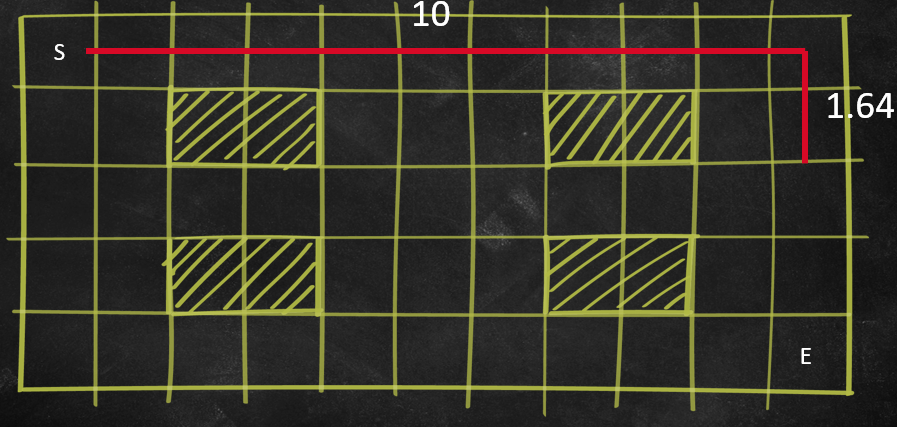

December 12, 2025Dec 12 comment_1121577 First post Link to comment https://daf.staffs.ac.uk/topic/83302-astles-jake-a013867o/ Report
December 12, 2025Dec 12 Author comment_1121747 Maths For AI This week I learnt about magnitudes, dot products, angles, normalisation and vector rotation. A vector's magnitude can be found by getting the square root of x squared + y squared. You can then be used to find the normal, if you divide the x and y properties by the magnitude. The dot product of two vectors can be found by normalising them and then doing something like: x * x + y * y The angle of a vector can be calculated by sort of reverse engineering the dot product function. Originally the dot product was calculated like this, where theta (θ) is the angle: a · b = |a| × |b| × cos(θ) So, to find the angle, you just need to reverse the dot product and the cos. This can be done using this function: Mathf.Acos() This takes in the normal value and then reverses the cosine. The rotation of a vector can be calculated by converting it's degrees to radians (which can be done by doing Mathf.PI * 2) / 360 - or Mathf.Deg2Rad) before doing: New X Position = Current X Position * Cos(Angle) - Current Y Position * Sin(Angle) New Y Position = Current X Position * Sin(Angle) + Current Y Position * Cos(Angle) Link to comment https://daf.staffs.ac.uk/topic/83302-astles-jake-a013867o/#findComment-1121747 Report
December 16, 2025Dec 16 Author comment_1124253 Steering Behaviours In this lesson, I learned that normalization essentially strips away all the "unnecessary information" (like speed) to leave you with a pure unit vector of length 1. This is crucial for isolating direction, which allows me to scale it by the max or current speed later. Using this as just a tool for getting a clean direction has made vector maths much easier. Then I had to get the steering formula to work: Desired Velocity - Current Velocity. This calculates a force (steering) that pushes the character towards their goal while fighting their current momentum. This means characters have to actually turn and accelerate rather than snapping instantly to a new path. The other key formula was distance = current position - target position (or vice versa for fleeing). This is the direction the AI would be steered towards (which is why it is reversed when fleeing). The magnitude of this vector was used to calculate how near the AI was to the player, so if the player was within the radius of the AI they would flee. Getting the Arrive function to work made me realise that getting to the target is easy, but stopping smoothly can be difficult. I used a slowing radius system where the character decreases their speed as a percentage of their max speed based on how deep they are into the radius. This stops them from overshooting or vibrating on the spot. I also found that calculating the distance before applying any speed scaling was crucial, if you modify the vector too early, you lose the distance data needed to calculate that deceleration ratio and the character stops early or behaves wierdly. Implementing the Pursue and Evade functions was much simpler, especially with Flee and Seek to build from. The main change was predicting the future rather than reacting to the present. This meant you couldn't just seek the player's current position; you have to calculate a predicted position using their velocity and a prediction time. I also had to add the current speed of the player to the speed of the AI to calculate the combined speed. This was used to check if the player or AI was moving, and then to pursue if so. This was also used to calculate the prediction time as a higher speed meant a lower time. A key optimization I found was clamping the prediction time so the AI couldn't predict over 5 seconds into the future this prevents weird behaviour when the target is far away, ensuring they stay consistent at all distances. Finally, I spent some time polishing the Flee and Seek functions to make them feel smoother. I noticed that simple fleeing could be jittery at the edge of the radius, so I implemented a smoothing system using lerping on the steering weight. By linking the weight to the distance (using Mathf.Min() to cap it), the force gently fades out as the target leaves the radius, rather than snapping off instantly. It took a while, but now I make all of the base movement behaviours, which all build off each other and work cleanly. Link to comment https://daf.staffs.ac.uk/topic/83302-astles-jake-a013867o/#findComment-1124253 Report
December 25, 2025Dec 25 Author comment_1125930 Group Movement - Merry Christmas! ? This week, my focus has been on moving beyond single-behaviour agents to a more complex system capable of handling multiple, competing impulses. This involved a significant refactor of the Steering Behaviour Manager and the implementation of: Separation, Alignment and Cohesion behaviours to achieve flocking. The core of this update is the ability to combine forces. Previously, an agent might only be able to Seek/Flee. Now, they can do multiple behaviours simultaneously. This involved adding a prioritised force method in the Generate Steering Force function (Steering Behaviour Manager). The manager iterates through all active steering behaviours on the entity. Instead of averaging them, it accumulates their calculated forces one by one. Before adding a force, the system calculates the remaining force available in the budget. If a behaviour calculates a force that fits within the remaining budget, it’s added entirely. However, if a behaviour asks for more force than is available, I don't just discard it; I normalise that force and scale it exactly to the remaining budget. This ensures the agent uses every bit of its potential power without exceeding its maximum physical capabilities. This method effectively creates a priority system where the order of behaviours matters. Vital behaviours (like Collision Avoidance) can be processed first to ensure they consume the necessary force before other fancy forces like Wander and Arrive are considered. To use this new manager, I implemented all three Flocking behaviours. Each of these uses "OverlapCircleAll" to detect neighbours, but they process that data very differently. Firstly, Separation - this behaviour prevents crowding. Like the other two Flocking behaviours, this involved using an FOV (field of view) check, using the Dot Product, to ensure agents only care about crowding from neighbours they can actually see (in this case, in front of them), rather than reacting to agents behind them. I also made it so that closer neighbours exert a significantly stronger repulsive force than those further away (Velocity / Distance). This means the agent effectively flees from the average centre of immediate overcrowding. The dynamic velocity change also looks more natural as opposed to always moving at a low or high speed. Next, Cohesion - this acts as the glue for the flock. The agent calculates the average position of all valid neighbours within its FOV. Once that centre point is found, the behaviour does essentially the same as "Seek", where the agent just travels towards a location. This counters Separation, which keeps the group distinct, whilst this adds to that by preventing them from drifting apart entirely. Finally, Alignment - this ensures the flock moves as a unified entity rather than a random swarm. Instead of looking at position, this behaviour checks the velocity of its neighbours. This is then normalised for the direction. Averaging these headings then finds the general direction of the group. The agent then steers to align its own heading with this average. This ensures the flock looks focused and synchronised, creating the smooth, fluid motion seen in bird flocks or schools of fish. Additionally, I refactored the base SteeringBehaviour class to get the visual debugging to work properly. Previously, I had separate variables for logic and debugging, which could lead to discrepancies. I have now moved "m_DesiredVelocity" and "m_Steering" to the base class. The physics logic calculates these directly, and the "OnDrawGizmosSelected" function renders these exact variables. This means that the lines I see in the Scene view (Desired Velocity, Current Velocity, and Steering Force) are guaranteed to be the actual vectors driving the agent. If the line looks wrong, the maths is wrong. Simple, quick and easy. Although none of this felt very simple, once I had separation figured out, alignment and cohesion followed much more easily, just with some tweaks and bits of code from previous behaviours. However, figuring the Separation class out wasn't easy, and I often found that once I went back to improve and refine different sections of the separation function, I would then later have to implement very similar code in the other Flocking classes. Link to comment https://daf.staffs.ac.uk/topic/83302-astles-jake-a013867o/#findComment-1125930 Report
January 14Jan 14 Author comment_1131183 Pathfinding Progress - Implementing Dijkstra and Corner CuttingThis week, my focus has been on navigating the grid itself, moving from steering forces to actual pathfinding. I’ve implemented the Dijkstra algorithm, which involved creating a robust system for tracking node costs and parents, as well as tackling the tricky logic of preventing agents from clipping through walls when moving diagonally. I also got the parameter to work, which prevents them from moving diagonally, completely.The algorithm maintains two specific lists: visited and notVisited. The logic loop is driven by constantly selecting the cheapest node from thenotVisited list using a LINQ query (OrderBy), effectively prioritising the most efficient path at every step. Side note: I hate LINQ. I think it is very unreadable, and that this all could've been done a lot better by avoiding LINQ completely. If the nodes themselves stored the visitation data as two properties and stored the last search ID, lists would no longer be needed. This is because every time a new search is started, the player's search ID would be incremented, which could then be checked against the node's ID to overwrite any stale visitation data from prior searches.A significant part of this update was handling the "Corner Cutting" logic. It’s easy to check if a diagonal tile is walkable, but it’s harder to check if you are phasing through the corner of a wall to get there.I implemented a check within the neighbour loop that specifically looks at diagonal movement. Since my neighbour array goes clockwise starting from Up (0), I realised that diagonal neighbours always have odd indices (1, 3, 5, 7). By checking if (i % 2 != 0), I can separate diagonal moves. To verify if a move is valid, I calculated the indices of the two cardinal neighbours adjacent to the diagonal (index - 1 and index + 1). I also had to add a small wrap-around check (if (cardinalB_Index == 8) cardinalB_Index = 0) to handle the final diagonal properly. If either of those cardinal neighbours is an obstacle (or null), the code flags it as corner clipping and skips to the next neighbour. This ensures agents can't squeeze around diagonal walls, which feels much more polished.Once the target is found, the system handles the path retrieval in reverse. I implemented a SetPath function that takes the final node and recursively checks its Parent property until it hits the start. Since this builds the path backwards (End -> Start), I just call m_Path.Reverse() (the one time I've seen LINQ look verbose) at the end to give the agent the correct forward route.I also added safety catches, like a maxIteration check, to prevent the while loop from crashing the editor if a path is impossible to find. I think the (while current != null) looks nice and verbose, but could just be while true. Break could then be called when the final node is found. Visual debugging also works fine; I think it essentially does a flood fill of the algorithm as it searches. It was satisfying to see the logic visualised, confirming that the cost comparisons (totalCost < existingNode.Cost) were actually finding the shortest route efficiently. Link to comment https://daf.staffs.ac.uk/topic/83302-astles-jake-a013867o/#findComment-1131183 Report
January 19Jan 19 Author comment_1134423 A* Pathfinding: Choosing the Right HeuristicFollowing on from my work with Dijkstra, I’ve been implementing the A* algorithm. While the core structure is similar, the magic of A* lies in the Heuristic function. This builds on the idea of finding the shortest path, but optimises it using the ideal direction to the target. I spent some time implementing four different heuristic types to understand how they affect path generation depending on the movement rules.1. Manhattan DistanceThis is the standard heuristic for 4-way movement (North, South, East, West). Since the agent is locked to the grid lines, the distance is just the absolute difference in X plus the absolute difference in Y. Thankfully, I don't have to care about Z since this is just in 2D. This makes things much more simplistic, because it assumes the agent has to go in an "L" shape to get anywhere diagonal.2. Euclidean DistanceThis calculates the direct "as the crow flies" distance using Pythagoras' theorem (C^2 = A^2 + B^2). I take the difference in X and Y, square them using Mathf.Pow, and return the square root. I thought this was a bit too optimistic for a grid since the agent can't actually walk through walls or cut across pixels.3. Octile DistanceThis was the most interesting one to implement. It works like Manhattan, but specifically factors in diagonal movement. The logic works by taking the shortest length of X or Y (the min value) since you can't go diagonally for more than the shortest side of the rectangle. You multiply this min distance by the cost of moving from straight to diagonal (sqrt(2) - 1). The full cost can then be calculated by adding the larger of the two distances (the max value), which essentially represents the straight movement remaining after you've used up all your diagonal potential. The formula boils down to: Max + (DiagonalCost - StraightCost) * Min.4. Chebyshev DistanceFinally, I implemented Chebyshev. This is similar to Octile, but it assumes that moving diagonally costs exactly the same as moving straight (Cost = 1). Because diagonal movement is free in terms of extra cost, the distance to the target is just determined by the longest axis. If I need to go 10 tiles right and 4 tiles up, it will take me 10 steps. So, the code just returns Mathf.Max(xDist, yDist).It’s been great to see how changing just this one small calculation completely alters how the agent navigates the map. Octile seems like the winner for my current setup since I'm allowing diagonal movement with a cost penalty. Edited January 20Jan 20 by Jake Astles Fixed layout and title. Link to comment https://daf.staffs.ac.uk/topic/83302-astles-jake-a013867o/#findComment-1134423 Report
January 20Jan 20 Author comment_1134462 A* Pathfinding - Dijkstra with a DirectionFollowing my work on the Dijkstra algorithm, I’ve moved on to implementing A* (A-Star). While the structure is very similar to my previous implementation, the logic behind how it prioritises paths is smarter. An analogy I like is that Dijkstra is like a thorough explorer; it leaves no rock unturned until it finds the target. Whereas, A* is like a type of guided missile. It still explores an area, but the guidance system dictates the direction it heads to find the target. The missile can also have different types of guidance systems, all with their own pros/cons and biases.The implementation:1. The "F-Cost" LogicThe biggest change is in the NodeInformation class. In Dijkstra, I only cared about the cost accumulated so far. In A*, I track three distinct values:G-Cost: The actual distance from the start node to the current node.H-Cost: The Heuristic, which is the estimated distance from the current node to the target.F-Cost: The sum of both (G+H).This is important because of how the algorithm selects the next node. In the GetCheapestNode function, I specifically sort by fCost. This allows the agent to factor in the total cost and the ideal heuristic direction cost. It prioritises nodes that are not only close to the start but also headed in the right direction.2. Dynamic HeuristicsI realised that the H-cost needed to match the movement rules to be accurate. I implemented a tiny helper method, GetHeuristic(), that checks my is diagonal movement is allowed.If diagonal movement is on, it uses Octile distance.If it’s straight-line only, it switches to Manhattan.This ensures the algorithm doesn't underestimate the cost of a path, keeping the pathfinding efficient and accurate. This also works on top of the pre-existing corner-cutting and diagonal movement checks in the neighbour selection section.3. Refining the LoopThe main loop follows the standard Open/Closed list format.The Open List tracks nodes that have been found but haven't finished checking (essentially the to-check list).The Closed List tracks nodes that have fully processed.When checking neighbours, I calculate the newGCost (current distance + next neighbour distance). If I encounter a node that is already in the Open list, I compare this new G-Cost against the old one. If the new path is cheaper (newGCost < existingNode.gCost) I update the parent and costs. This ensures that if the agent finds a shortcut to a known tile, it switches to that better path immediately.4. Corner Cutting & Old Dijkstra CodeFor the diagonal movement logic, I just reused the old Dijkstra implementation. It iterates through the neighbours, checks if i % 2 != 0 (odd index = diagonal), and then verifies the two cardinal neighbours flanking it. If either is blocked, the move is invalid. It worked perfectly there, so it works perfectly here.Overall, the transition was smooth. The debug visualisation (DrawPath) really highlights the difference—whereas Dijkstra floods the map in a circle, A* creates a focused beam searching towards the target, only expanding outwards when it hits an obstacle. Edited January 20Jan 20 by Jake Astles Fixed title. Link to comment https://daf.staffs.ac.uk/topic/83302-astles-jake-a013867o/#findComment-1134462 Report
January 20Jan 20 Author comment_1135311 Theta Pathfinding - Breaking Free from the GridI've reached the final stage of my pathfinding implementation. After getting A* working, I found the movement to be pretty robotic. The agent would only move intervals of 45 or 90 degrees so I decided to use the information in a recent lecture to upgrade it with a Theta* optimisation.A* assumes you must always step to a neighbour. Whereas Theta* checks if the current neighbour can be seen by the grandparent. If the answer is yes, it skips the intermediate parent steps and draws a straight line. Essentially this optimises the path in runtime, as opposed to generating the entire path and then doing post-processing to optimise it.I implemented this by adding a small new Theta* class which get's passed into the main A* one via the constructor. This just hold the circle-cast function and the relevant LayerMask variable. I'm pretty proud of this as it felt nice and decoupled, as opposed to having a fat A* class, now I can implement specifically Theta* wherever I want.The logic change is actually quite small but powerful. Inside the neighbour loop, instead of just calculating the cost from the current node, I look back at the current.parent (the Grandparent node).I use a Physics2D.CircleCast from the Grandparent to the Neighbour to ensure there are no obstacles between them.I found a simple Raycast isn't enough because the agent has width. If I used a thin ray, the agent would try to squeeze through gaps that are too small, clipping into walls. The circle-cast ensures the path is wide enough for the agent's physical collider (radius 0.5).If the Grandparent has a clear line of sight to the Neighbour, I simplify the path. The Neighbour's parent becomes the Grandparent, which deletes the intermediate parent node.The ResultA* paths look like lightning bolts, sharp/robotic and grid-locked.Theta* paths look smoother/more natural. The agent cuts across open fields at any angle (20°, 75°, etc.) and hugs corners tightly without clipping them.It was a bit tricky getting the LayerMasks right (I accidentally had targets spawning inside rocks for a moment because my spawner was looking at the wrong layer), but now that it's working, the movement feels much more organic. Edited January 20Jan 20 by Jake Astles Added context about the Theta* class. Link to comment https://daf.staffs.ac.uk/topic/83302-astles-jake-a013867o/#findComment-1135311 Report
January 29Jan 29 Author comment_1140335 Decision-Making and Finite State MachinesThis week, my focus has been on implementing a proper decision-making system for the AI, moving away from a simple non‑OOP case/switch flow into something more maintainable and extensible. The aim was that adding or changing behaviours should feel like plugging new pieces into a framework, as opposed to constantly rewriting one giant decision block and hoping nothing else breaks.The bulk of the work happened when I began implementing the class structure. Initially, everything was broken. I relied on inheritance from the decision-making manager; the classes didn't transition between each other properly, and even when they did transition, the functionality wasn't there. This was a good start, though, because after some refactoring, I passed the decision manager into states when they were instantiated. This was done by putting a protected variable ready to hold the reference to the manager, in the state parent, so every state could then reference the manager directly by filling the field on construction. Thus, ending all of the tight coupling. This meant I could instantiate the classes when necessary, as opposed to having them all attached to the agent from the get-go.Initially, only Wander was reliably working, and everything else either didn’t trigger cleanly or didn’t integrate nicely with the rest of the steering pipeline. I then had to correct the way the states transition, as at the moment, the priority was wrong. The issues within the states themselves included the scan not working and the arrive steering behaviour having the wrong state priority and picking a seemingly random pickup target as opposed to the closest target.After the core loop was working, I had to make lots of small refactors and optimisations to get the rest of the system to work and look good. This was mostly involved in tightening up responsibilities, reducing the amount of weird behaviour and edge cases, and making the architecture consistently OOP. This was done by improving the decision layer and splitting up the code into functions to improve readability. The decisions were the hard part because it was too easy to make something close to the classic case/switch logic, which I don't think is OOP.After many changes, I ended up settling for a switch function which received input after a few if checks. I'm sure this could be improved by having the states switch between each other directly, or something; however, it was easier to start by doing the state changes in the manager and the state logic in the states. Perhaps implementing the state changes into the states by giving them extra exit and check functions could be a future improvement. That would potentially make the manager even cleaner and the states more robust/decoupled.Fixing the switch function and changing the state priority order in the manager made the update flow much more predictable so that scanning/perception, decision selection, and steering happened in the correct order, every time. Once that update path was consistent, the rest of the system started to look a lot more flush, because behaviours weren’t fighting stale data or being evaluated at awkward times.Additionally, once scanning started feeding properly into decisions, I needed to tweak the chosen behaviours to make them look smoother. For example, after I got scanning working, the agents were evading slightly too slow, so I had to up the weight of the Evade behaviour. That’s the sort of adjustment that makes the overall AI feel responsive and intentional, as opposed to technically doing the right thing but in a way that looks weak or delayed. Overall, the time was spent focused less on adding fancy new behaviours and more on building a decision-making backbone that can support them properly, then refactoring until the whole system feels coherent rather than stitched together. Edited January 29Jan 29 by Jake Astles Grammar change. Link to comment https://daf.staffs.ac.uk/topic/83302-astles-jake-a013867o/#findComment-1140335 Report
February 6Feb 6 Author comment_1144822 Decision Making - Markov and Fuzzy LogicThis week I’ve implemented a Markov Decision System driven by Fuzzy Logic.Here is how I broke down the architecture:1. The "Activation" Concept (Markov) Instead of hard-switching states, every state now calculates a DegreeOfActivation (0 to 100). The Manager checks all states, and any state with activation > 0 gets added to the m_ActiveStates list.To make the behaviour feel more natural, I moved away from linear distance checks. I implemented a Exponential Decay Curve using Mathf.Exp.The Formula: initialHeight * Mathf.Exp(curveSteepness -1) * distance) A negative steepness value (-0.1f) creates a sharp drop-off.The Result: If an enemy is in the agent's face, the RunAwayState activation spikes to 100. As the enemy moves away, the fear lingers slightly before dropping off rapidly, rather than cutting out instantly at a specific radius.2. Fuzzy Logic for Pickups The most interesting logic happens when the agent needs resources. I didn't want a simple if (health < 50) check. Instead, I used Animation Curves (m_CurrentHealthCurve, m_CurrentAmmoCurve) to map raw values to a urgency score (0.0 to 1.0).This allowed me to implement fuzzy decision-making. The agent compares the urgency of Health vs. Ammo:High Contrast: If I'm dying (Health Urgency 0.9) and have plenty of ammo (Ammo Urgency 0.1), I ignore the ammo even if it's closer.Fuzzy Middle Ground: If both urgencies are similar (within 0.125f of each other), the logic shifts to efficiency rather than urgency. This means the closest pickup can be prioritised if neither is significantly more urgent than the other. This makes the AI look smarter as someone with 85 HP and 90 ammo wouldn't run to the other side of the map for a health pickup if ammo was closer.3. The List Management "Gotcha" Implementing the Manager was tricky. I ran into a bug where states would Exit() correctly but refuse to Enter().It turned out to be an over-optimization in my ActivateStates function. I was checking if (previousActiveStates.Count == 0) return;.The Logic Flaw: On the very first frame (or coming out of a full Idle reset), the previous list is empty. My code was seeing "Nothing happened before" and immediately quitting, meaning the new states never got their Enter() call.The Fix: I removed that check. Now, if the previous list is empty, it correctly interprets that as "Everything in the current list is new" and triggers the logic.Additionally, I also improved the way the player attacks the zombies. Before, there was no control over when the target to fire at would be reset. Now, with a few tweaks to the moving entity class, the player can check if they are already attacking and will only change target when not. Lastly, I added a feature where you can choose if the player can move whilst attacking. I simply checked the new attacking variable and returned out of the movement function if it was true. This meant the player AI looked even more realistic as they would temporarily stop to properly aim and attack. This was also good because it gave the zombies had a chance to hit the AI so it meant the health was being used and the no longer looked completely perfect and robotic.4. The Result The difference is obvious and looks great. The agent no longer snaps between behaviors. It weighs its options and prioritises survival when critical, but optimizing for travel distance when the pressure is low. It feels less like a machine following a flowchart and more like a player making value judgments. Link to comment https://daf.staffs.ac.uk/topic/83302-astles-jake-a013867o/#findComment-1144822 Report

")